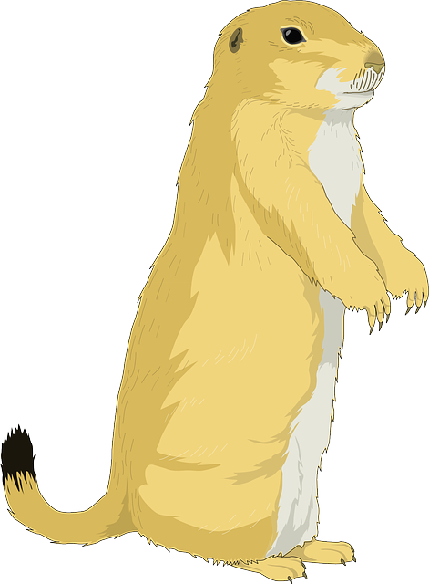

The Gold Rusher

 Ceci est la mise en pratique de nos cours HTML plus qu'un véritable jeu. Vous aurez le plaisir de suivre les aventures de Tony N'Tee cowboy, mineur et grand utilisateur de dynamite devant l'éternel. Saurez vous découvrir ce que son cheval est en train de faire pendant que Tony explore les canyons à la recherche de filons?
L'histoire prends place à la fin du 19ième siècle pendant l'époque mouvementée de la ruée vers l'or. Le personnage principal de cette aventures western spaghetti se prénomme "Tony N'tee" et sa vocation est de miner des pépites d'or et de pixels pour s'en mettre plein les poches. Il comptait sur son fidèle destrier Buzzy Bumper mais ce matin au réveil le cheval s'était fait la malle avec le stock de dynamite.
Afin de faire se déplacer votre mineur du haut vers le bas utilisez les touches Z et S (ou les flèches) pour la gauche et la droite Q et D (ou les flèches). Vous pourriez utiliser des bâtons de dynamite en appuyant sur espace mais Tony est à cours d'explosifs... ...vous pouvez toujours marteler la touche espace mais bon... ...Vous pouvez jouer à The Gold Rusher en VR mais rien n'est prévu pour ça... ...mais vous pouvez...